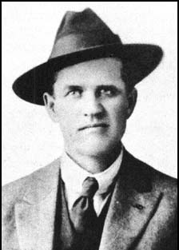

Frank Little - A True American Hero
"1/2 White, 1/2 Indian, All I.W.W."
On August 1, 1917, labor organizer Frank Little was taken forcibly from his boarding house in Butte, Montana, and was lynched from a railroad trestle.
In the summer of 1917, Frank had been helping to organize copper workers in a strike against the Anaconda Copper Company, but it was most likely his stand against World War I that so infuriated his assassins. He argued that all working men should refuse to join the army and fight on behalf of their capitalist oppressors. As he said in the last speech before his death, "I stand for the solidarity of labor." Frank understood that his stand against the war might get him killed, but even this prospect did not deter him. He was a true revolutionary.
Not much is known about the early life of Frank Little. He was born in 1879 and was active in the 1913 free speech campaigns in Missoula, Fresno, Spokane, Peoria, and elsewhere. Frank was also active in organizing lumberjacks, mineworkers and oilfield workers into labor unions. By 1916, Frank was a member of the Industrial Workers of the World General Executive Board.
The I.W.W. was founded in 1905 by Eugene V. Debs, William "Big Bill" Haywood, and others who believed that workers should be organized into a single industrial union because individual trade unions were likely to be pitted against each other during disputes with the employers. The I.W.W. was founded on the belief that the working class and the employing class have nothing in common and that the historic mission of the working class is to abolish capitalism and replace it with an economic system based upon human need rather than private profit, so that the benefits of the good life could be extended beyond the privileged few.
 Frank Little is an American hero, not for the great things he accomplished in his lifetime, but because he remained true to his revolutionary principles until the day he died. Today, those of us lucky enough to be living in the United States and other western countries are living in a period of relatively stable economic prosperity. Some of us may even live our entire lives without ever belonging to a labor union or participating in a strike. It seems as though we have been living in a collective "comfort zone." Our thoughts are basically constructed for us by our educational institutions and by the mass media, so we have little information regarding the turbulent class struggle that was taking place a century ago. How many of us today even understand the conflict between capital and labor? How many of us think about why we are living the good life while three-fourths of humanity is living in poverty? And how many think about the possible consequences when the stock market finally collapses and the conflict between capital and labor intensifies in the developed countries?
Frank Little is an American hero, not for the great things he accomplished in his lifetime, but because he remained true to his revolutionary principles until the day he died. Today, those of us lucky enough to be living in the United States and other western countries are living in a period of relatively stable economic prosperity. Some of us may even live our entire lives without ever belonging to a labor union or participating in a strike. It seems as though we have been living in a collective "comfort zone." Our thoughts are basically constructed for us by our educational institutions and by the mass media, so we have little information regarding the turbulent class struggle that was taking place a century ago. How many of us today even understand the conflict between capital and labor? How many of us think about why we are living the good life while three-fourths of humanity is living in poverty? And how many think about the possible consequences when the stock market finally collapses and the conflict between capital and labor intensifies in the developed countries?
Even those of us who have studied labor history and understand the conflict between capital and labor would be humbled to stand in the same room with a man like Frank Little. He lived in the trenches, teaching and organizing so that his fellow workers could one day enjoy the good life that only the bosses enjoyed. He was not an "armchair revolutionary" but a man who actively put his principles into action on a day to day basis, knowing that he could be jailed on some trumped-up charge or shot by a Pinkerton thug at any time. Even though Frank Little was executed by six masked men in the wee hours of August 1, 1917, his ideas will live on as long as people remember him. And in Butte, Montana, "we never forget...."